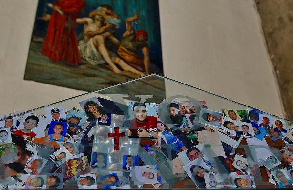
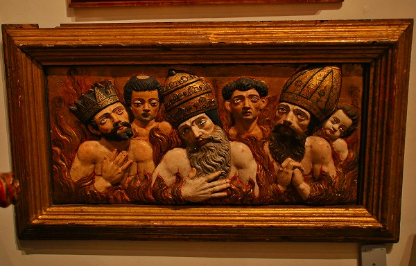

グアダルーペ寺院/メキシコシティ Basilica de Guadalupe/CDMX
メキシコ珍寺武者修行、お次はメキシコシティ市内の
グアダルーペ寺院。
細かい事で申し訳ないが、日本では「教会」と一括りにされるが、メキシコ（＆多分他のカトリック圏）の教会はカテドラルとかバシリカとかテンプロとかに分類されている。
この分類は意外と重い意味を持っているみたいで、カテドラルはその町を代表するようなカトリック信仰の中心地を表しており、バシリカはバチカン公認の教会を意味している。
そしてテンプロはバチカンに公認されないメキシコの民間信仰とされる教会、というように分類されているようだ。
（以上、現地の人の説明です。違ってたらスミマセン。）
で、グアダルーペ寺院。Basilica de Guadalupe
この寺院はメキシコシティの市街地の4キロ程北にある。
メキシコシティのど真ん中にはメトロポリタン・カテドラルという大聖堂があるが、シティっ子のみならず
メキシコ人のガチな信仰を集めているのはこちらのグアダルーペ寺院なのだ。
東京で例えるならば増上寺や寛永寺がメキシコシティ・メトロポリタン・カテドラルだとすればグアダルーペ寺院は庶民信仰のメッカである浅草寺に相当するのかな。違うかな。
細かい事はさておいて、まずはグアダルーペ寺院に行ってみようではないか。
地下鉄の駅を出ると、人々はみな同じ方向に向かって歩いている。
その先には大きな建物が見える。
グアダルーペ寺院の前にはたくさんの店が並んでいる。
↑こちらがグアダルーペさま。
マリアさまのメキシカンバージョンと考えていただけたら良いかと思う。
メキシコに行くとあちこちでこのグアダルーペのグッズを見かけることになる。
それほど
メキシコ人の信仰において不可欠な存在なのだ。
極端に言えばメキシコのカトリックはキリスト教というよりグアダルーペ教といっても過言ではない程絶大な支持を集めている。

そんなこんなでかつての聖堂。
歴史を感じさせる重厚な建物だ。
そんな旧聖堂の隣には1976年に建てられた近代的な現聖堂がある。

ここに
奇跡のマントと呼ばれる聖遺物が納められているのだ。
広い堂内には大勢の人が集まり、牧師の説教を聞いている。
その脇の動く歩道に乗るとこの寺院の至宝、奇跡のマントが掲げられているのだ。
ここでこのマントにまつわるグアダルーペ出現の奇跡譚を簡単に説明しよう。
時は1531年12月9日。
ファン・ディエゴというインディオの農民の前に突如女神が現れた。
女神はインディオと同じ褐色の肌をしていたといいう。
女神はこの地に礼拝堂を建てることを司教に伝えて欲しいとディエゴに託した。
ディエゴは司教に伝えるもにわかには信じてもらえない。
すると女神は再び現れ、バラの花をマントに包み司教に渡すように命じた。
その花を司教に届けると、あら不思議、
マントに聖母の姿が映し出されているではありませんか！
司教はビックリ！かくしてこの地に礼拝堂が建てられることになりましたとさ。めでたしめでたし。
…というようなハナシ。
で、その500年近く前に出現した女神の姿がこちら。
↑中央の額の中にあるのがそのマント。
動く歩道に乗りながら見るので長い時間じっくり見ることは出来ない。
一説には500年近く経っても全く色褪せていないのだとか。
周りの人達はかなりガチで拝んでいた。
ちなみにこの
グアダルーペの女神の出現譚はバチカンでも公認されているのだ。
こちらは旧聖堂。
メキシコ全土の信仰を集める寺院だけあってかなり立派だ。

奇跡譚あるところに民間信仰あり。
たくさんの写真が奉納されていた。
無論これも供養のためではなく写真の人の幸せを祈るために捧げられたものだ。
コテコテの祭壇。
近代的な新聖堂を見た後だけに余計こってりと見えた。
旧聖堂の裏手に女神が現れた丘があるという。
色々見物しながら上ってみる。
自分でプレスするスタイルの記念メダル。
日本では見なくなったなあ。
記念撮影コーナー。
もちろん有料（だと思う）。
途中の石塀のアップ。
細かいなあ。
丘の下にある池のほとりに女神出現の様子が再現されていた。
おお、想像以上に褐色ですねー。
この褐色の女神という設定がメキシコ人のハートをがっちりキャッチしたようだ。
…というのも、そもそもこの聖母が現れたここテペヤックの地はアステカの女神、トナンツィンの聖地とされていた。
そこに褐色の聖母が現れたというのだ。
現地の人々にして見れば当然トナンツィンが現れたと思うだろう。
アステカ帝国がスペイン人に滅ぼされてからわずか10年。
当然カトリックなど現地人にしてみれば得体の知れない宗教だった頃の話だ。
以下は想像だが、カトリック教会側はこの奇跡譚（ホントかウソかは重要ではない）をインディオが納得するような形でキリスト教に落とし込んでいったのだろう。
すなわちトナンツィン＝マリア、と。
こうしてこの地に現れたグアダルーペの女神はマリアでもありトナンツィンでもあるという両義性を持ちながら現地人に信仰されていく。
キリスト教布教のための方便だったのだ。
考えてみて欲しい。
このように渡来宗教と現地宗教は常にぶつかってきた。
特に中世のキリスト教の布教は世界の大半をカバーするかのような勢いで拡大していった。
アジア北中米、アフリカといった元々キリスト教がなかった地にもキリストの福音を届けようとしていた。
この時代の植民地政策とキリスト教布教は両輪の輪であったのだ。
日本でもキリスト教布教の際にゼウスとは何か？という疑問に現地人（日本人）は大日様（太陽神）と考えていた節がある。と、遠藤周作の沈黙にあった。
そのようにカトリックは世界中の現地の神を飲み込んで浸透していったのだ。
この国でよく見られるキリスト教の多面性、
それはスペイン人のキリスト教を布教させたい思惑と現地人の
スペインに服従しつつアステカ時代の神を無下にできない思惑が交錯したところからうまれたものなのだろう。
階段を上り、丘の上へと向かう。
段々呼吸が苦しくなる。
それもそうだ。メキシコシティの標高は2,240m。
陸上選手が高地トレーニングを行うボルダーが1,655ｍ。それより高いのだ。

ヒーヒー言いながら丘の上に辿り着く。
ここが女神が現れた場所だ。
そこにあるのは最初に建てられた礼拝堂。
中では大勢の人が祈りを捧げていた。
正面の祭壇にはグアダルーペの聖母の絵が祀られていた。
そしてここにも数多くの写真が。

写真と一緒に小さな金属製の何かが奉納されている。
これもメキシコではよく見かける奉納物で、祈りを捧げている人物を象ったものが多い。
しかし中には手や足もある。
これは日本の手型足型奉納と全く一緒で
身体の具合の悪い部分を奉納すると病気が治る、あるいは病気が治った感謝の印による奉納なのだ。
見れば手足の他に心臓や眼も確認できる。
病の悩みは古今東西一緒なんだなあ、と妙に納得しましたよ。
丘の上から見る旧聖堂と新聖堂。
旧聖堂の裏側（こちらから見ると手前側）にある建物は博物館だ。
何やらこの寺院にまつわるお宝が収蔵されているみたい。
早速行ってみよう。
中に入ってみたらビックリ。
延々と
エクスヴォトExvotoが飾られているではないか！
エクスヴォトとは神に捧げる板絵で主に鉄の板に絵具で描かれている。
基本的に
日本の絵馬によく似ているが、絵馬が願い事を叶えてもらうために奉納するのに対してエクスヴォトは
願いが叶った感謝のために奉納する。
このように
奉納者が自ら描いて奉納するので同じ絵柄はひとつとしてない。
そこがエクスヴォトの魅力だ。
ちなみに↑のエクスヴォトは手術が成功して神様ありがとう、といった内容のエクスヴォト。

さらに先程もあった手型足型をはじめとしたたくさんの金属の奉納物も展示されていた。
これらの手型足型もエクスヴォトの一種で、
ミラグロ（奇跡の意味）と呼ばれている。
一方、板絵の方はミラグロと区別するために
レタブロ（絵の意味）とも呼ばれている。
当サイトでは基本的には板絵をエクスヴォト、身体のパーツの金属片をミラグロと呼ばせていただく。
で、再びレタブロのエクスヴォト。
↑多分交通事故を起こし
大爆発したけど助かりました。神様ありがとうございます、的な内容だと思う。
車のサイズに対して爆発の規模が大きすぎるようにも思えるが、そこは素人の絵なので勘弁していただきたい。
↑トラムとバスに挟まれて危なかったけど何事もなく助かりました。グアダルーペ様のおかげです。ありがとうございました。
このような
エクスヴォトはヨーロッパでも古くから奉納されている。
特にイタリアやスペインなどのカトリックの国で見られるがドイツなどにもあるようだ。
いずれにせよ近年のものは少なく、多くが中世～近世のものなのでメキシコのように新しいエクスヴォトがズラリと並んでいるのはかなり珍しい。
しかもヨーロッパのエクスボトはそれなりの絵師が描いているので宗教画っぽい威厳がある。
一方、メキシコのエクスヴォトは奉納者が自ら描いているのだろう。画力の差が激しい。
しかも
題材が現代的で願い事も結構庶民的だ。
例えばこれ。
（もちろん意訳です）雨の日に車にはねられました。
あーこれ死んだなー、と思ったんですけど奇跡的に助かりました。
これも神様のおかげです。ムーチャスグラシアス！グアダルーペ様！
（もちろん意訳です）マタドールである私は不覚にも怪我をしてしまいました。
絶望の淵にあった私を救ってくれたのが、グアダルーペ様、貴女なのです。グラシアス。
こんな感じで基本神に感謝、でしめるのがエクスヴォトの定型文だ。
ガラスケースには十字架の数々。
ジャンルごとに展示するのがお好みのようだ。
エクスヴォトの展示はまだまだ続く。
たくさんの家畜に恵まれて感謝！
血を吐いたけど元気！感謝！
荒野の我が家に電気が来ました！ビバ通電！
流石にグアダルーペ信仰の総本山なのでほとんどのエクスヴォトにグアダルーペが描かれているが、場所によっては他の聖人が描かれている場合もある。
突然空から黒い塊がやってきた。
嗚呼、あなたは神なのですね！感謝！
手術成功の御礼。
何か一人撃たれて死んでますけど。
このシチュエーションって何でしょう？
ケンカをやめて～二人をとめて～、的なヤツすか？
交通事故は病気の次に多い題材だ。
息子が警察に捕まり拷問を受けましたが、無事帰ってきました。神様ありがとうございます！
エクスヴォトを見ているとメキシコ社会の矛盾や理不尽が見えてくる。
こちらも監獄シリーズ。
夫の帰りを願い祈願しているのだろう。
使徒襲来か？
それなら神様より
人型決戦兵器の出番では？
真面目な教会の博物館なのに結構面白いエクスヴォトが並んでいて見ごたえがあった。
まだまだ展示は続く。
足元から天使の顔が出ている女神の像。
こちらもそう。
絵も。
これなんて14人もいます。
不勉強で申し訳ないが、こういうモチーフがあるんですか？ご存知の方教えてちょ。
こちらの方も二人まとめて踏みつけちゃってます。
仏教の邪鬼とは違う意味合いがあるんだろうなあ、多分。
濃厚なお宝の展示が延々と続く。
この教会がいかにメキシコ人に信仰されているかがイヤというほど判る。
まあ、イヤじゃないんだが。

何か火あぶりにされてる人達。
地獄絵図なのだろうか。
額装された植物文様。
一見、金糸の刺繍かと思ってよく見てみたら…
えええー！
全て奉納されたミラグロでした～！
人々が熱狂する奇跡のマントも凄かったが、個人的にはエクスヴォトの展示の方が遥かに印象的だった。
再び新聖堂前の広場に出る。
そこには
跪いて教会に向かう人達がいた。
これは仏教圏でいえば五体投地のようなもので、本当に真剣な願い事がある方々が行う行為だ。
例えば息子が誘拐された、という事例が多いようだが、そのような深刻な事態に会った際に家族はこうしてヒザ歩きで教会に向かうのだ。
この行為をどこから始めたのかは定かではないが、少なくともこの寺院の敷地内だけをヒザ歩きしたのではない事は明らかだ。
なぜなら膝がボッロボロに破けているからだ。
何の願いかはわからねど、願いがかなう事を陰ながら祈ります。
次から次へと参拝客がやって来る。
ここはメキシコだけでなく南米各地から参拝者が来るらしい。
門前には多くの屋台が。
キリストの偉大さを伝える豆本でした。